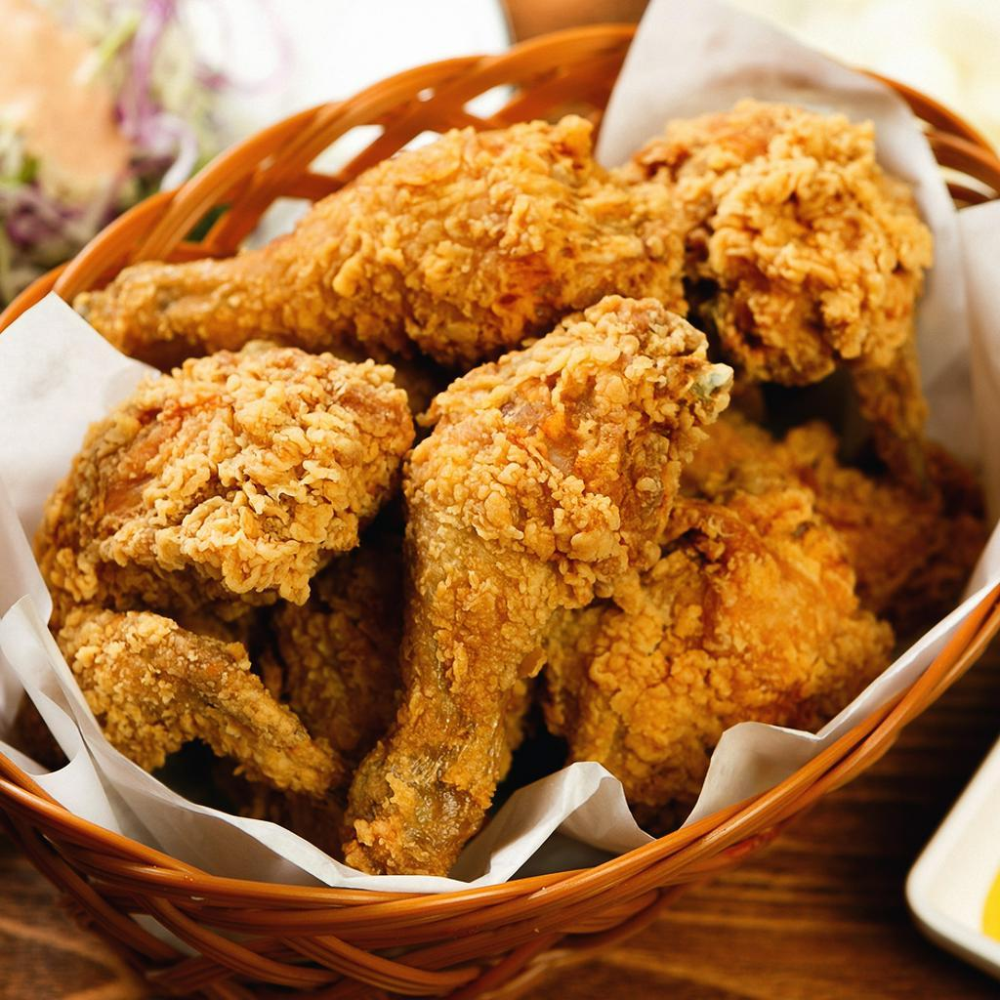

Home
Fried Chicken

A Classic All-time Favorite Crispy Fried Chicken
Across many cultures, fried chicken holds a special place at the table, often linked to family meals, celebrations, and shared moments. It brings people together at gatherings, picnics, and casual get-togethers, creating a sense of comfort and joy. Simple yet deeply satisfying, fried chicken continues to be a worldwide favorite, offering warmth, familiarity, and happiness in every serving.
Ingredients
- 3 large eggs(beaten)
- 1 teaspoon hot sauce
- 1 teaspoon Worcestershire sauce
- 2 1/2 cups all-purpose flour
- 3 tablespoons cornstarch
- 3 tablespoons seasoned salt
- 2 teaspoons paprika
- 1/2 teaspoon cayenne pepper
- 2 teaspoons black pepper
- 1/2 teaspoon garlic powder
- 1 tablespoon onion powder
- 8 pieces chicken
Steps
- In a medium sized bowl, whisk together eggs, hot sauce and worcestershire and set aside.
- Next add flour, cornstarch, seasoned salt, paprika, cayenne pepper, black pepper, garlic powder and onion powder to a paper bag and shake to mix well.
- Dip each piece of chicken into egg wash coating both sides then dip into seasoned flour thoroughly coating each piece. Then add piece to baking sheet to rest.
- Finish coating all chicken and let sit for 10-15 minutes until coating has set.
- While coating sets, add 1-1/2 inches of oil to a cast iron skillet or heavy bottom skillet and heat over medium high heat. Also turn on oven to 275 degrees.
- This is my test for knowing when the oil is ready: Big Mama always tossed a tiny bit of flour in the oil and if it began to fry and sizzle, the oil was ready.
- Fry four pieces at a time on each side starting with dark meat since it takes longer. Make sure you don’t overcrowd the pan.
- After each side has turned slightly golden, put the top on the skillet to steam the inside of the chicken ensuring doneness. After a couple of minutes, remove the top and continue to fry until the crust is crispy again and completely golden brown.
- Remove chicken from oil and place on paper towels or rack to drain. Place chicken on a baking sheet covered with parchment and add to warmed oven while finishing the other chicken pieces.
- Fry the remaining chicken pieces and drain and add to oven. Add the remaining chicken to the oven.
- Serve when ready.